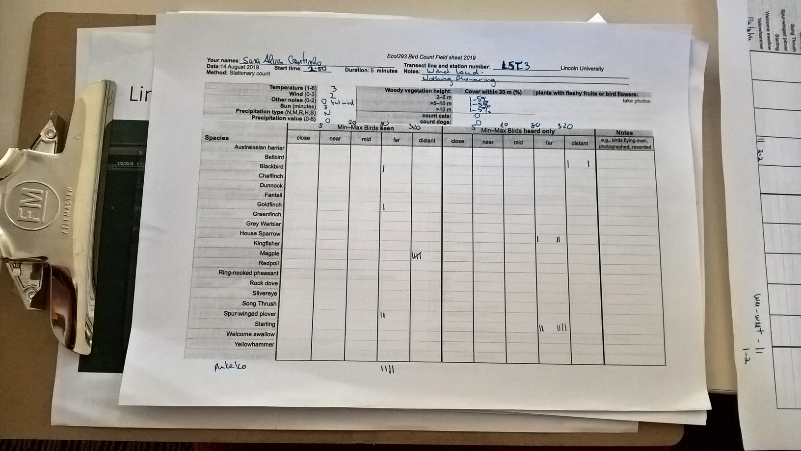
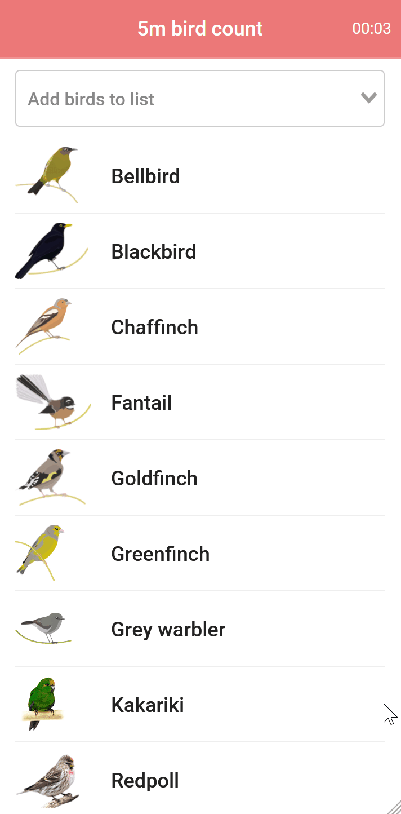
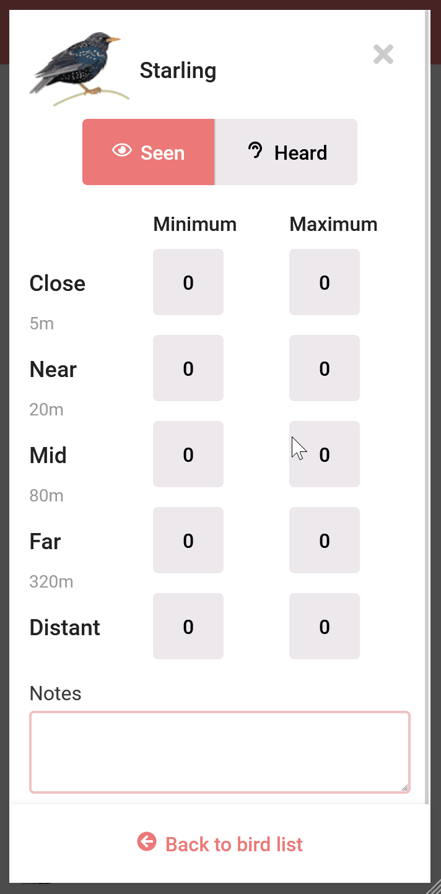
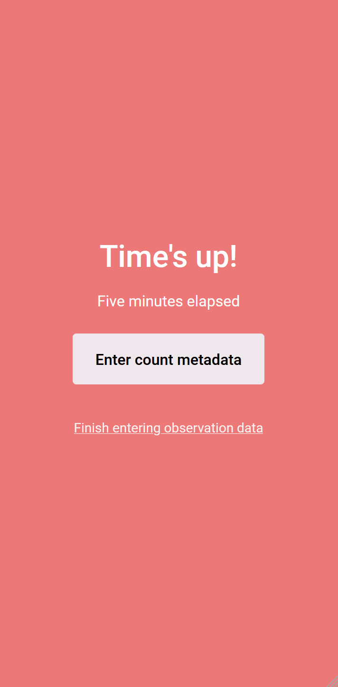
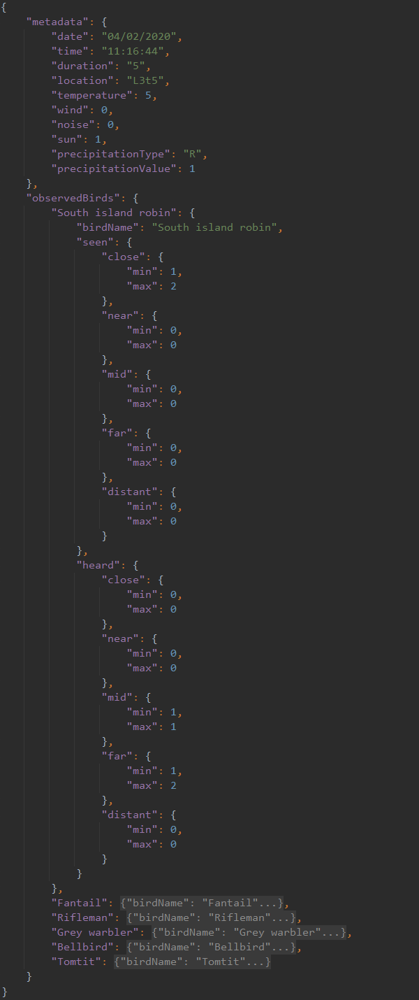
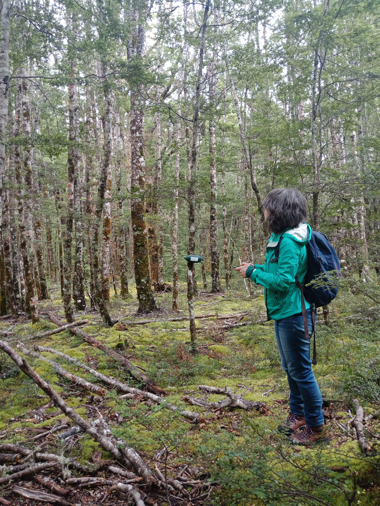

<!DOCTYPE html><html class="no-js" lang="en"><head>
    <meta charset="utf-8">
    <title>Bird Counter | Portfolio | Senior digital product &amp; interaction designer, UX/UI, and front-end developer</title>
    <meta name="description" content="Removing paper and transcription errors from field data collection">
    <meta name="viewport" content="width=device-width, initial-scale=1">
    <link rel="preconnect" href="https://fonts.gstatic.com">
<link href="https://fonts.googleapis.com/css2?family=Lora:ital,wght@1,400;1,700&amp;family=Mulish:wght@300;400;600&amp;display=swap" rel="stylesheet">

<link rel="stylesheet" href="../css/main.css">
	<link type="text/css" rel="stylesheet" href="../css/portfolio.css">

</head>
<body>
<div id="main" class="portfolio-item-page-wrapper bird-counter">
    
<header id="main-header">
	<div class="content">
		<a href="../" class="logo-inline">Sara Coutinho</a>
		<nav class="nav-main" id="main-menu">
			<ul>
				<li class="about">
					<a href="../about">
						<span class="title">About me</span>
						<span class="caption">A brief intro</span>
					</a>
				</li>
				<li class="skills">
					<a href="../what-i-do">
						<span class="title">What I do</span>
						<span class="caption">Process &amp; Skills</span>
					</a>
				</li>
				<li class="portfolio portfolio-page">
					<a href="\portfolio\" class="selected">
						<span class="title">Work</span>
						<span class="caption">Portfolio</span>
					</a>
                    <ul class="sub-menu">
                        <li>
                            <a href="kiwiviz">KiwiViz</a>
                        </li>
                        <li>
                            <a href="cacophony">Cacophony</a>
                        </li>
                        <li>
                            <a href="ws">WhereScape</a>
                        </li>
                        <li>
                            <a href="trimble">Trimble</a>
                        </li>
                        <li>
                            <a href="tvn">TVN</a>
                        </li>
                        <li>
                            <a href="bird-counter" class="selected">Bird Counter</a>
                        </li>
                    </ul>
				</li>
				<li class="scrapbook">
					<a href="http://scrapbook.saracoutinho.co.nz" target="_blank" rel="nofollow">
						<span class="title">Scrapbook</span>
						<span class="caption">The inspiration stream</span>
					</a>
				</li>
				<li class="contact">
					<a href="../contact">
						<span class="title">Contact</span>
						<span class="caption">Say hi</span>
					</a>
				</li>
			</ul>
			<button class="trigger" id="menu-hide">Close</button>
		</nav>
		<button class="trigger" id="menu-show">Menu</button>
	</div>
</header>    <div class="project">
        <article>
            <nav class="project-nav" id="project-nav">
                <ul>
                    <li>
                        <a href="#introduction">Introduction</a>
                    </li>
                    <li>
                        <a href="#background">Background</a>
                    </li>
                    <li>
                        <a href="#challenge">Challenge</a>
                    </li>
                    <li>
                        <a href="#process">Process</a>
                    </li>
                    <li>
                        <a href="#solution">Solution</a>
                    </li>
                    <li>
                        <a href="#results">Results</a>
                    </li>
                </ul>
            </nav>
            <header class="project-intro" id="introduction">
                <div class="logo">
                    
                </div>
                <h1>Removing paper and transcription errors from field data collection</h1>
                <p class="lead">I developed a progressive web app to reduce data entry errors while doing five-minute bird counts, an activity traditionally done on paper.</p>

                <p class="visit-wrapper">
                    <a class="btn-link" href="/birdcount/" target="_blank">View progressive web app</a>
                </p>


                <div class="media-wrapper">
                    <div class="phone">
                        <video controls="" poster="../images/portfolio/birdcount/count-birds-list.png">
                            <source src="../images/portfolio/birdcount/birdcount-demo.mp4" type="video/mp4">
                            Your browser does not support the video tag.
                        </video>
                    </div>
                </div>

                <div class="info">
                    <dl>
                        <dt>Client</dt>
                        <dd>Personal project</dd>

                    </dl>
                    <dl>
                        <dt>Role</dt>
                        <dd>Design and development</dd>
                        <dd></dd>

                    </dl>

                    <dl>
                        <dt>Date</dt>
                        <dd>2020</dd>
                    </dl>

                </div>
            </header>

            <div class="project-content">

                <h2 id="background">Background</h2>
                <p>I developed this progressive web app to help with the data collection process of my <a href="../research/SCIE393-Report_Sara-Alves-Coutinho.pdf" target="_blank">final project at Lincoln University</a>. As part of it, I had to do five-minute bird counts, an activity where you stay stationary for five minutes and record all birds seen and heard. The bird counts follow a <a href="https://www.doc.govt.nz/our-work/five-minute-bird-counts/" target="_blank" rel="nofollow">standard protocol</a> that is used widely across New Zealand.</p>

            </div>

            <div class="project-content ptl">

                <h2 id="challenge">Challenge</h2>

                <p>The traditional data collection process involves carrying paper sheets around, collecting the data and then transcribing it into a digital format. I've done paper counts before and the transcription process is always painful, time consuming and error prone  not to mention having to decipher illegible hand-writing or blotched ink when it rains.</p>

            </div>

            <div class="project-content light ptl">
                <div class="media-wrapper wide">

                    <figure>
                        <figcaption class="description">An example of a five-minute bird count done on paper.</figcaption>
                        
                    </figure>

                </div>
            </div>


            <div class="project-content ptl">
                <p>I had a challenging project ahead and wanted to automate the data collection process as much as possible, so decided to create a progressive web app that can be used in areas without cellphone network coverage and that records the counts' data in a digital format.</p>
            </div>

            <div class="feature-bg-img feature-bg-img-1">
            </div>

            <div class="project-content">

                <h2 id="process">Process</h2>
                <p>I was already familiar with the five-minute bird count protocol and knew the exact use case and the setting in which the app would be used. I quickly sketched the UI and created a very basic prototype that guided the development of the app in Vue.js.</p>
            </div>


            <div class="project-content ptl">

                <h2 id="solution">Solution</h2>
                <p>The result is a mobile web app that can be used offline, and where the count data and metadata is stored in a digital format (JSON) that is downloaded after each count.</p>

            </div>

            <div class="project-content ptl">

                <div class="two-cols-feature">
                    <div class="col text">

                        <h3>Tailored to the site</h3>
                        <p>I'd been to the field site before, so had a good idea of what bird species were present there. The main view of the app is populated with a preset list of bird species, but extra species can be added if they are detected on site.</p>
                        <p class="small"><small>Bird illustrations designed by Fabiola C. Rodriguez Estrada and available for download at the <a href="https://datastore.landcareresearch.co.nz/dataset/bird-icons-colour1" target="_blank" rel="nofollow">Landcare Research DataStore</a>.</small></p>

                    </div>

                    <div class="col center">
                        <div class="phone">
                            
                        </div>

                    </div>
                </div>

                <div class="two-cols-feature reverse">

                    <div class="col text">
                        <h3>Adding bird data</h3>
                        <p>Detected birds are added either as being seen or heard, and in this particular project I added distance bands  this can help estimate how many individuals of a species are on a given site. Tapping on a number increments the value for that field; fields can also be edited to correct mistakes or to add very large numbers of birds.</p>
                    </div>

                    <div class="col center">
                        <div class="phone">
                            
                        </div>
                    </div>

                </div>


                <div class="two-cols-feature">
                    <div class="col text">

                        <h3>Adding metadata</h3>
                        <p>Five-minute bird counts require the collection of additional data. These fields are often present on paper forms as numeric values that are then linked to a key available somewhere else (back of the paper page or footnote). I've exposed the textual descriptions of these fields to make this step more user friendly, but stored the actual values following the standard protocol of using numeric values.</p>

                    </div>

                    <div class="col center">
                        <div class="phone">
                            
                        </div>
                    </div>
                </div>

            </div>

            <div class="project-content">

                <div class="media-wrapper center">
                    <figure>
                        <figcaption class="description">Data from a five-minute bird count, stored in JSON format.</figcaption>
                        
                    </figure>
                </div>
            </div>


            <div class="project-content">

                <h2 id="results">Results</h2>
                <p>Sixty five-minute bird counts later I had the results stored in a digital format and didn't have to worry about spending hours transcribing the results. Although the development of the app took a while, it was definitely worthwhile as it saved me hours and hours of manual data input and allowed me to focus on getting the <a href="../research/SCIE393-Report_Sara-Alves-Coutinho.pdf" target="_blank">project results</a>.</p>

            </div>

            <div class="project-content ptl">
                <div class="media-wrapper">
                    <figure>
                        <figcaption class="description">The app being used in the field.</figcaption>
                        
                    </figure>
                </div>
            </div>


        </article>
    </div>
    
<div class="portfolio-preview">
	<div class="item previous"><h6><a href="tvn"><span>Previous project</span>Twining Valley Nurseries</a></h6></div><div class="item next"></div>
	<div class="item back">
	    <h6>
            <a href="\portfolio\"><span>Back to</span>Portfolio</a>      
        </h6>	
	</div></div>
</div>
<script src="../scripts/analytics.js"></script>
<script type="text/javascript">
    window.addEventListener("load", function () {
        let mainMenu = document.getElementById("main-menu") || "";
        let menuTrigger = document.getElementById("menu-show") || "";
        let menuClose = document.getElementById("menu-hide") || "";

        function toggleMenuClass() {
            if (mainMenu.classList.contains("selected")) {
                mainMenu.classList.remove("selected");
            } else {
                mainMenu.classList.add("selected");
            }
        }

        menuTrigger.onclick = toggleMenuClass;
        menuClose.onclick = toggleMenuClass;


        let mainHeader = document.getElementById("main-header");
        let previousScrollPosition = window.pageYOffset;

        if (window.pageYOffset >= 68) {
            positionHeader();
        }

        function positionHeader() {
            if (window.pageYOffset >= 68) {
                let currentScrollPosition = window.pageYOffset;

                if (!mainHeader.classList.contains("show-on-scroll-up")) {
                    mainHeader.classList.add("show-on-scroll-up");
                }

                if (previousScrollPosition > currentScrollPosition) {

                    if (mainHeader.classList.contains("hide")) {
                        mainHeader.classList.remove("hide");
                    }

                } else {
                    if (!mainHeader.classList.contains("hide")) {
                        mainHeader.classList.add("hide");
                    }

                }
                previousScrollPosition = currentScrollPosition;
            } else {

                if (mainHeader.classList.contains("show-on-scroll-up")) {
                    mainHeader.classList.remove("show-on-scroll-up");
                }
                if (mainHeader.classList.contains("hide")) {
                    mainHeader.classList.remove("hide");
                }
            }
        }

        window.onscroll = positionHeader;

    });
</script>

<script src="../scripts/plugins/menuspy/menuspy.min.js"></script>
<script>
    function initialiseSideMenu () {
        if (window.matchMedia('(min-width: 1280px)').matches) {
            let elm = document.querySelector('#project-nav');
            let ms = new MenuSpy(elm, {
                enableLocationHash: false
            });
        }
    }

    window.addEventListener("load", function () {
        initialiseSideMenu();
    });

    window.addEventListener("resize", function() {
        initialiseSideMenu();
    });
</script>


</body></html>